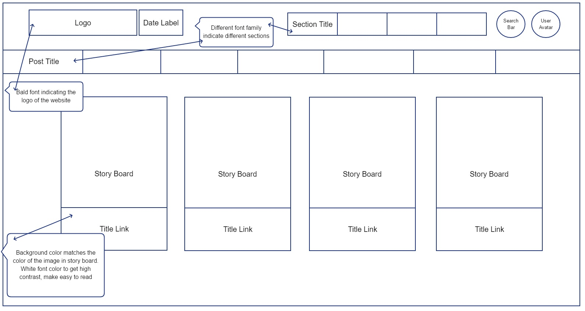
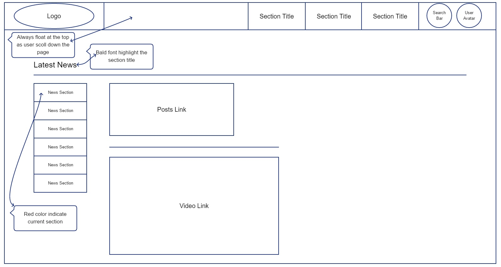
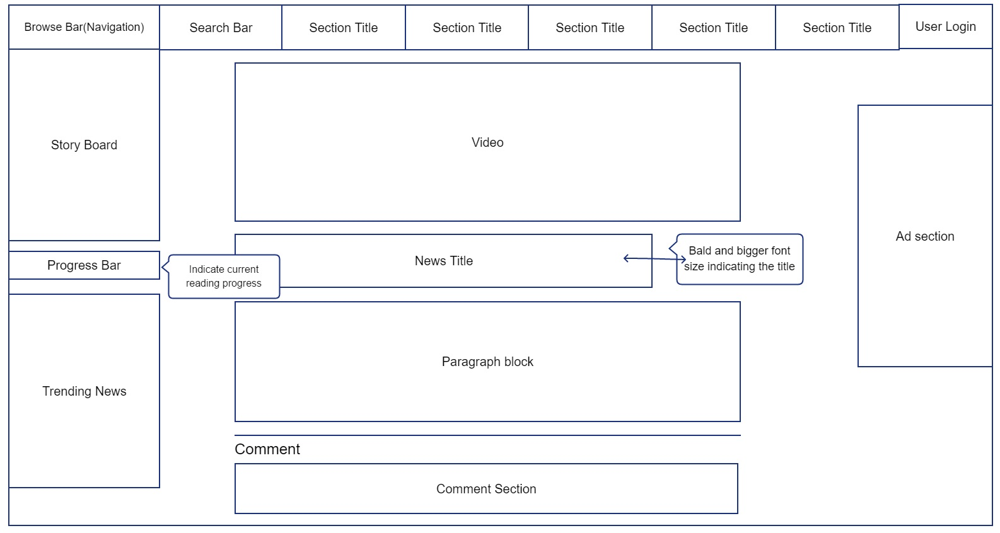
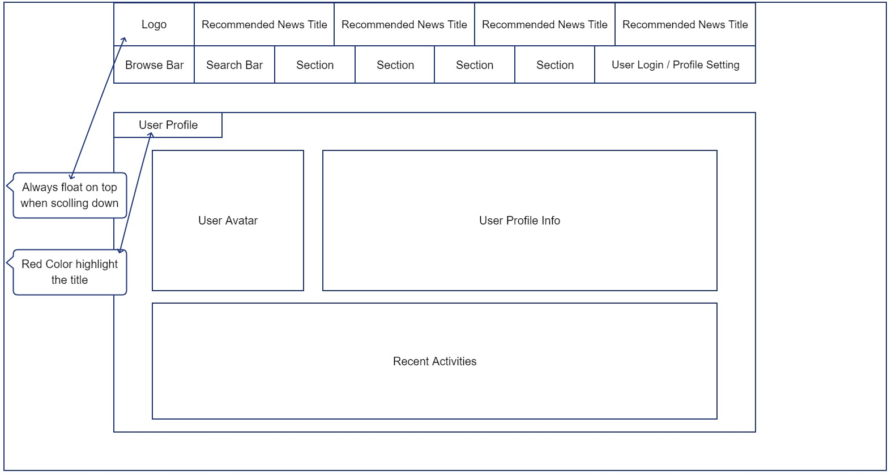
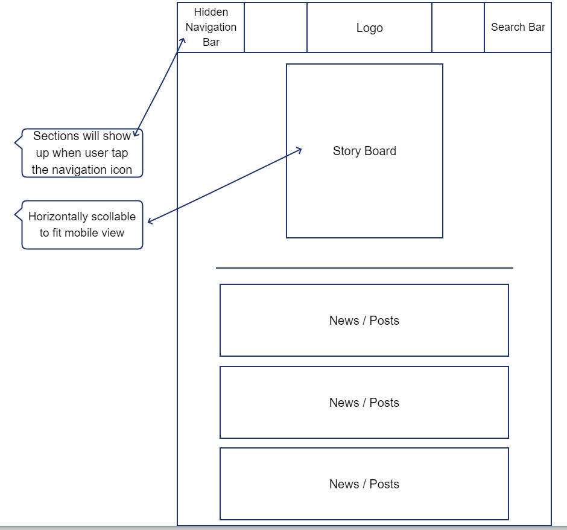
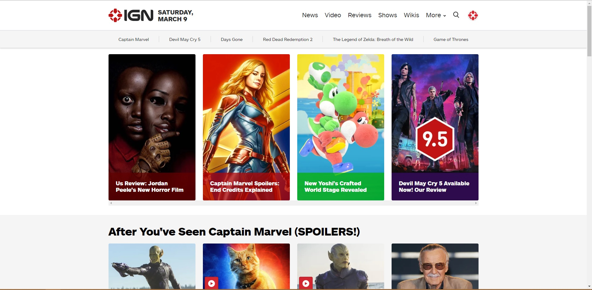

Section A(Web Design)
1- Select a website that you like, and create or draw 5 different wireframes or sketches for different main parts in the selected website (as Figure 3-2 and Figure 3-3 from the textbook). You may use normal drawing or computer tool (painting, pencil, word, etc..). In each wireframe/sketch, you will be highlighting the different headings, fonts type, font size, white spaces, or any design critic you may want to add (See figure 5 – 2 in the textbook as an example for comments/critics).
Screenshots are not acceptable and going to be graded by 0.
Wireframe for the main page:
Figure 1:

Wireframe for the news page:
Figure 2:

Wireframe for the post page:
Figure 3:

Wireframe for user view:
Figure 4:

Wireframe for mobile view:
Figure 5:

2- Select a web site and take a screenshot for the main page, remove the all CSS links from it, can do that using developer tools in chrome, expand the <head> element, then right click on the <link.. remove element as in Figure 3, once you remove all links, take a screenshot. The aim of the exercise to highlight the importance of CSS. Comment on the major changes
Before removing CSS:

After rmoving CSS:
The layout of the webpage completely changes after deleting CSS. The story boards and the major
images are gone. The navigation bar turns into a simple table after deleting the stylesheet.